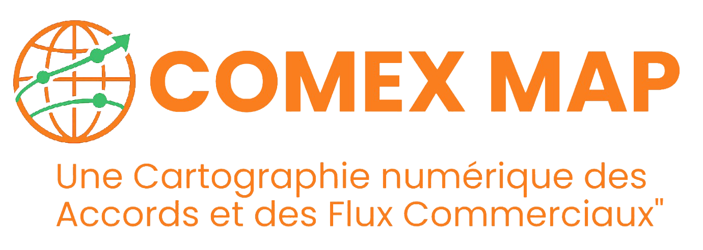

Commerce Extérieur de la Côte d'Ivoire
Trouvez rapidement les réponses à vos questions sur le commerce extérieur
.accordion-body, though the transition
does limit overflow.
.accordion-body, though the transition
does limit overflow.